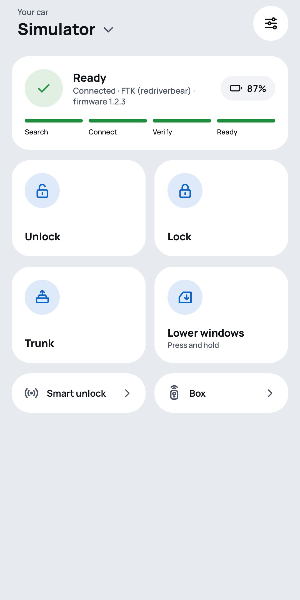
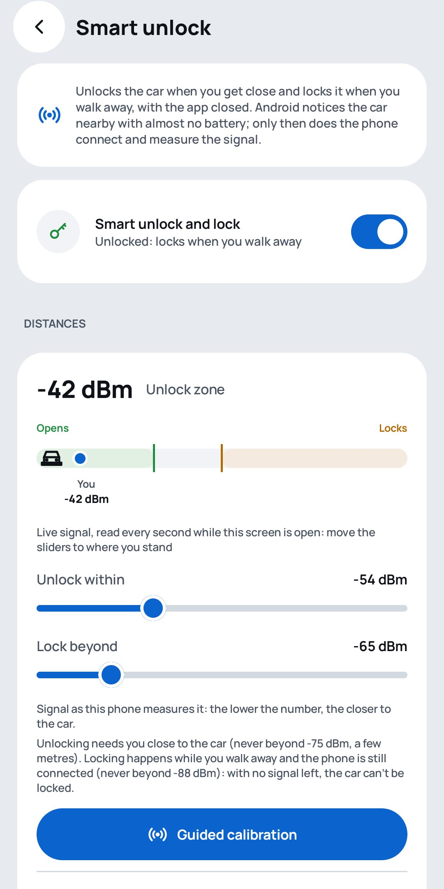
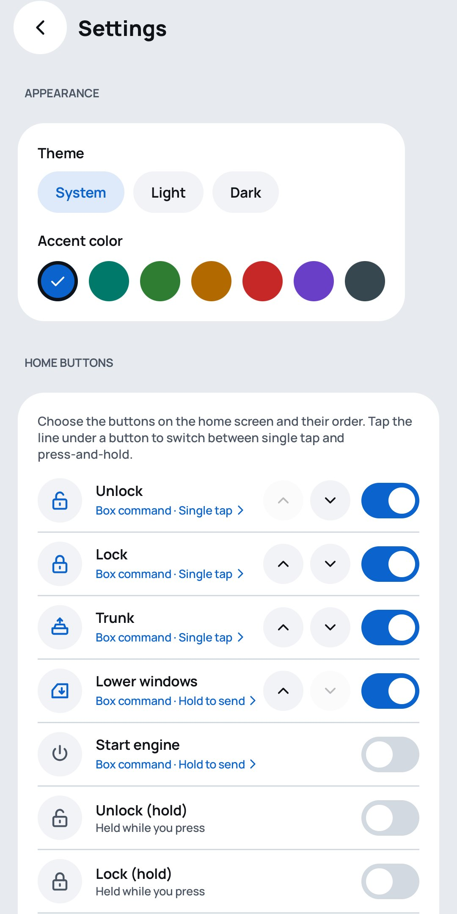
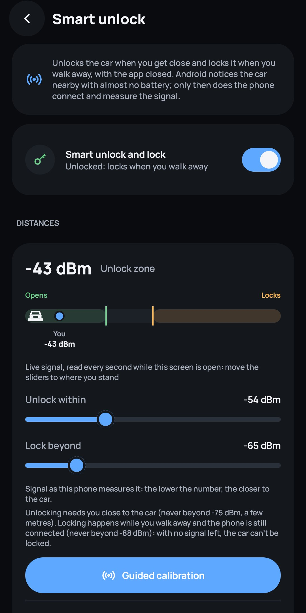

Il telefono è la chiave dell'auto.
BtCarKey è un'app Android gratuita e open source per i moduli Bluetooth LE per auto. Apri, chiudi e apri il bagagliaio con un tocco, oppure lascia che l'auto si apra quando arrivi e si chiuda quando te ne vai. Senza account, senza cloud, leggera sulla batteria.
- Android 10+
- Nessun permesso Internet
- GPL-3.0
- Italiano · English

Tutto quello che fa il telecomando, e di più
Scritta da zero per sostituire l'app originale del modulo, che richiede un account, interroga il modulo di continuo e scarica la batteria.
Comandi dell'auto
Apri, chiudi, bagagliaio, abbassa i finestrini e avviamento remoto, più i tasti del telecomando tenuti premuti. I comandi delicati richiedono una pressione lunga.
Sblocco smart a mani libere
Apre quando ti avvicini e chiude quando ti allontani, ad app chiusa. Calibrazione guidata, protezione contro i passaggi casuali, tasto pausa.
Leggera sulla batteria
Niente scansioni in background e niente polling. È il controller Bluetooth ad aspettare l'auto, mentre il telefono dorme.
Le chiavi restano sul telefono
La chiave di ogni modulo è cifrata con l'Android Keystore. Per mostrarla o esportarla servono l'impronta o il PIN.
Niente account, niente cloud
L'app non chiede nemmeno il permesso Internet. Non raccoglie nulla e nulla esce dal telefono.
Più auto, una sola app
Aggiungi i moduli con una scansione o importando una chiave che conosci. Tema chiaro e scuro, colori d'accento, pulsanti della home a scelta.
Screenshot
Fatti su un Galaxy S25 Ultra collegato al simulatore ESP32 del progetto.



Come funziona lo sblocco smart
Accesso keyless senza telecomando in tasca e senza tenere il telefono collegato tutto il giorno.
- L'auto si associa una volta come dispositivo companion. Da lì in poi è Android stesso ad accorgersi quando arriva nel raggio, anche ad app chiusa.
- Solo allora il telefono si collega e legge l'intensità del segnale, circa una volta al secondo.
- Segnale forte per alcune letture di fila: l'auto si apre. Allontanandoti, sotto la soglia di chiusura: l'auto si chiude e il telefono si scollega.
- Limiti di sicurezza integrati: per aprire devi essere a pochi metri, un controllo opzionale richiede il telefono sbloccato e i passaggi ripetuti sospendono lo sblocco smart.
Compatibilità
BtCarKey funziona con i moduli Bluetooth LE aftermarket che parlano il protocollo FTK, quelli venduti con l'app "redriverbear". Il protocollo è documentato nel repository e l'app è pensata per aggiungere altre chiavi Bluetooth. Serve Android 10 o successivo; lo sblocco smart richiede Android 12 o successivo.
Domande frequenti
Posso usare il telefono come chiave dell'auto?
Sì, se sull'auto è installato un modulo keyless Bluetooth LE. BtCarKey parla direttamente con il modulo via Bluetooth Low Energy e manda gli stessi comandi del telecomando: apertura, chiusura, bagagliaio, finestrini e avviamento remoto.
Con quali moduli funziona BtCarKey?
Oggi supporta il protocollo FTK, usato dai moduli aftermarket venduti con l'app "redriverbear". L'app è costruita attorno a un'interfaccia di protocollo, quindi si possono aggiungere altre chiavi Bluetooth.
Serve una connessione Internet o un account?
No. BtCarKey non chiede nemmeno il permesso Internet: niente account, niente cloud, niente tracciamento. Le chiavi restano sul telefono, cifrate con l'Android Keystore.
Come funziona lo sblocco smart?
Android si accorge dell'auto nelle vicinanze con la sua scansione a basso consumo, anche ad app chiusa. Solo allora il telefono si collega e misura il segnale: apre quando sei vicino e chiude quando ti allontani.
Consuma batteria?
No. Niente scansioni in background e niente polling. L'attesa dell'auto è affidata al controller Bluetooth, e lo sblocco smart lavora solo nei pochi minuti in cui sei vicino all'auto.
È gratis?
Sì. BtCarKey è gratuita e open source con licenza GNU GPL v3, senza pubblicità.